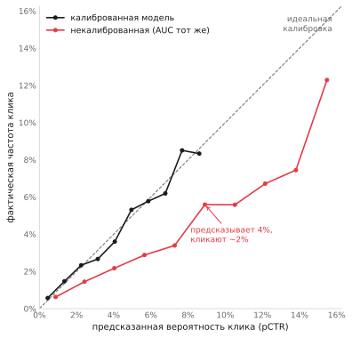
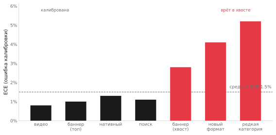
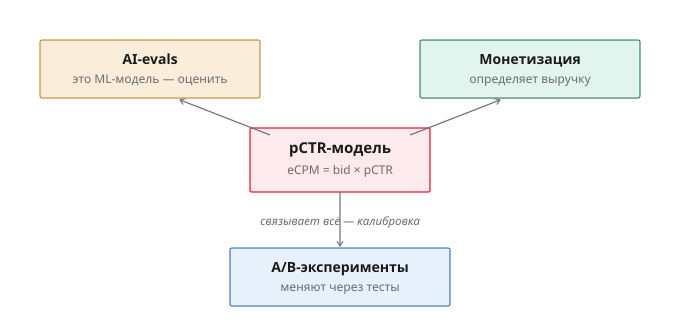

Почему pCTR-модель с отличным AUC может терять деньги: калибровка в рекламном аукционе
Команда обучила новую модель предсказания кликов. Офлайн-метрики лучше прежней: AUC вырос, на валидации модель чётче отделяет клик от не-клика. Выкатили в аукцион — и выручка не выросла, а кое-где просела. Это не редкость и не баг обучения. Это разрыв между тем, как ML-модель оценивают, и тем, как она работает в монетизации. Модель, отличная по привычным метрикам, может тихо разрушать аукцион — потому что в рекламе важна не та характеристика, которую измеряет AUC.
Разберём, почему так, и что на самом деле нужно мерить у модели, от которой напрямую зависит выручка.
Где живёт pCTR
В рекламном аукционе объявления ранжируются не по ставке, а по ожидаемому доходу с показа. В упрощённом виде место в выдаче определяет eCPM — произведение ставки рекламодателя на предсказанную вероятность клика:
eCPM = bid × pCTRpCTR (predicted click-through rate) — выход ML-модели: для каждого объявления она оценивает вероятность клика. Эта вероятность входит в аукцион как число, и от неё зависит сразу две вещи. Первая — порядок: кого показать выше. Вторая, менее очевидная — деньги: во многих системах pCTR участвует в расчёте того, сколько списать с рекламодателя за клик. Значит абсолютное значение pCTR имеет цену напрямую: если оно завышено, рекламодателя перегружают и портят ему ROI; если занижено — теряют доход и недопоказывают хорошие объявления.
Вот первый сдвиг в мышлении: pCTR используется не как «да/нет», а как точное число, на которое умножается ставка. И это ломает привычный способ оценки модели.
Ловушка: высокий AUC не значит хорошую модель для аукциона
Как обычно оценивают модель предсказания кликов? AUC — площадь под ROC-кривой, мера того, насколько хорошо модель различает кликнутые и некликнутые показы. Чем выше AUC, тем лучше модель ранжирует: ставит объявления с кликом выше, чем без.
И здесь ловушка. AUC измеряет только относительный порядок — кто выше кого. Ему всё равно, какие именно числа выдаёт модель, лишь бы их порядок был правильным. Модель может говорить «вероятность клика 20%» там, где реально кликают в 10% случаев, и AUC будет отличным — порядок-то сохранён, просто все значения раздуты вдвое.
Но аукцион умножает ставку на это конкретное число. Если модель систематически завышает pCTR — eCPM раздувается, аукцион переоценивает объявления, цены и порядок плывут. Отсюда классическая боль рекламных команд: офлайн AUC новой модели вырос, выкатили — а online-выручка не сдвинулась или упала. Модель стала лучше ранжировать и хуже попадать в абсолютные значения. AUC этого не показал, потому что не за этим следит.
Добавьте сюда, что обычная accuracy для кликов вообще бесполезна: средний CTR на дисплейной рекламе — доли процента, поэтому модель, которая всегда предсказывает «не кликнет», получит точность под 99% и не поймает ни одного клика. Accuracy и AUC — не те метрики, по которым стоит судить pCTR для монетизации.
Что важно на самом деле — калибровка
Свойство, которое нужно pCTR-модели в аукционе, называется калибровкой. Модель калибрована, если её предсказанные вероятности совпадают с реальными частотами: среди показов, которым модель дала pCTR 10%, реально кликают примерно в 10% случаев. Не «выше тех, кому дала 5%» (это про порядок), а именно «10% означает 10%».
Проверяют калибровку через reliability diagram: показы группируют по предсказанной вероятности и для каждой группы сравнивают предсказанное с фактическим. Идеально калиброванная модель ложится на диагональ — предсказала 10%, получила 10%. Систематическое отклонение вверх или вниз — это miscalibration, и её сводят в одно число — Expected Calibration Error (ECE), средневзвешенное расхождение между предсказанным и фактическим по всем группам.

Неприятный факт из практики: современные глубокие модели часто плохо калиброваны, даже когда отлично ранжируют. Они «уверенно ошибаются» — выдают резкие, смещённые вероятности. В индустрии описаны случаи, когда новая deep-модель давала pCTR в среднем на десятки процентов выше прежней при сопоставимом AUC: ранжирует не хуже, но абсолютные значения раздуты, и в аукционе это означает систематический перекос. Поэтому калибровку чинят отдельно — post-hoc методами вроде Platt scaling или изотонической регрессии, которые «подтягивают» выход модели к реальным частотам, не трогая её ранжирующую способность.
Вывод раздела: для монетизации pCTR-модель оценивают в первую очередь по калибровке (ECE, reliability diagram), а не по AUC. AUC отвечает на вопрос «правильный ли порядок», калибровка — на вопрос «правильные ли числа», и в аукционе цена у второго вопроса прямая.
Дрейф: калибровка не вечна
Даже идеально калиброванная на момент обучения модель со временем расходится с реальностью. Появляются новые рекламодатели и форматы, меняется сезонность спроса, сдвигается поведение пользователей — распределение данных уезжает от того, на котором модель училась. pCTR, точный в январе, к апрелю систематически врёт.
Поэтому калибровку нельзя проверить один раз при выкатке и забыть — её нужно мониторить во времени. На практике для этого держат небольшую долю трафика в стороне от продакшен-ранжирования (holdback) — она даёт более честную опорную точку для измерения реальных частот, не искажённую тем, что сама модель влияет на показы. По этому holdback регулярно считают ECE и смотрят, не растёт ли он. Рост ECE — сигнал, что модель пора переобучать или перекалибровать, причём задолго до того, как просадка станет заметна в выручке.
Сегментная справедливость: «в среднем калибрована» — недостаточно
Самая коварная часть. Модель может быть прекрасно калибрована в среднем по всему трафику — и при этом систематически врать на отдельных сегментах. На частых форматах и категориях, где много данных, она калибрована; на редких, на новых, на длинном хвосте — переоценивает или недооценивает клики. Усреднённый ECE это прячет: ошибки на сегментах гасят друг друга в общем числе.
Для аукциона это означает скрытый перекос: модель завышает pCTR на одном сегменте (его объявления неоправданно лезут вверх и перегружают рекламодателей) и занижает на другом (хорошие объявления недопоказываются). И всё это под прикрытием хорошей средней калибровки.

Лечится это сегментной (field-aware) калибровкой: ECE считают не только в целом, но и по ключевым срезам — формат, категория, новизна объявления, сегмент пользователя. Это та же логика, что и в стратифицированной оценке любой ML-модели: средняя метрика по несбалансированным данным маскирует провалы в хвосте, и увидеть их можно только разложив оценку по сегментам.
Как это собрать в evals-пайплайн
Сведём в практику. Оценка pCTR-модели для монетизации — это не одна цифра AUC на валидации, а постоянный eval-контур:
- Метрика — калибровка (ECE, reliability diagram), а не accuracy и не только AUC. AUC оставляем для контроля ранжирования, но решение о выкатке не принимаем по нему одному.
- Источник правды — holdback-трафик, не искажённый самой моделью.
- Во времени — мониторинг ECE на дрейф, а не разовая проверка при релизе.
- По сегментам — ECE на ключевых срезах, чтобы поймать перекос, который прячет средняя.
- Перед выкаткой новой модели — сравнение не только AUC, но и калибровки; «AUC вырос» без проверки калибровки — недостаточное основание.
Что забрать с собой
pCTR-модель — это место, где сходятся три процесса: она ML-система (её надо оценивать), она определяет выручку (её ошибки стоят денег), и меняют её через эксперименты (со всеми сложностями тестирования в аукционе). Связывает их одно свойство — калибровка.

Главная ошибка — оценивать pCTR-модель привычными ML-метриками. Высокий AUC говорит, что модель правильно ранжирует, но ничего не говорит о том, правильные ли числа она выдаёт — а в аукционе ставка умножается именно на число. Модель с отличным AUC и плохой калибровкой тихо теряет деньги. Оценка ML-модели в монетизации — это калибровка, дрейф и сегменты, а не точность.
Как тестировать изменения pCTR-модели в аукционе, не сломав A/B — в статье «Почему A/B-тест ломается в рекламном аукционе». Почему средняя метрика прячет провал на сегментах — на примере LLM-классификатора в кейсе «Один кейс, три процесса».